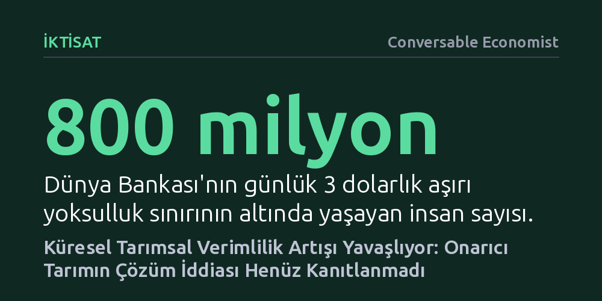

IKTISAT · Conversable Economist · 2026-10-17
Küresel tarımsal üretim ve verimlilik artışı 2011'den bu yana belirgin biçimde yavaşladı. Mevcut girdi yoğun model tıkanırken öne çıkan onarıcı tarımın verimlilik artışı sağladığına dair henüz ampirik kanıt yok.
Gıda krizine karşı onarıcı tarımın hazır bir mucize çözüm olduğu algısını yıkarak verimlilik kazanımlarının henüz bilimsel olarak kanıtlanmadığını gösterir.

Dünya nüfusunun en az 50-60 yıl daha artmaya devam etmesi bekleniyor. Doğum oranlarındaki küresel düşüş belirginleşse de, uzayan ortalama yaşam beklentisinin yarattığı demografik ivmeyi kırmak zaman alacak. Bunun yanı sıra, Dünya Bankası'nın belirlediği günlük 3 dolarlık aşırı yoksulluk sınırının altında yaşayan yaklaşık 800 milyon insan bulunuyor ve yüz milyonlarca kişi de bu sınırın hemen üzerinde hayat mücadelesi veriyor.
Gezegenin en yoksul kesimlerinin refah düzeyinin ve beslenme standartlarının yükselmesi hedefleniyorsa, mevcut küresel gıda arzı yetersiz kalacaktır. Artan nüfusla birlikte hem daha fazla kaloriye hem de daha dengeli beslenmeye yönelik talep katlanacak. Dolayısıyla dünyayı bekleyen temel mesele, gıda üretimini hem hızla hem de sürdürülebilir bir şekilde nasıl artıracağımız sorusunda düğümleniyor.
Tarımsal üretim artışı temelde dört ana kaynaktan beslenir: daha fazla toprağı tarıma açmak, sulama alanlarını genişletmek, girdi kullanımını (emek, hammadde ve sermaye) yoğunlaştırmak ya da eldeki kaynakları daha verimli kullanmak. İktisatçılar, üretimdeki artışın yeni arazi, sulama veya ek girdi gibi doğrudan ölçülebilen faktörlerle açıklanamayan kısmını teknolojik ve yönetsel verimlilik kazanımları olarak tanımlar. Daha iyi tohumlar, gelişmiş hava tahmin sistemleri ve modern çiftçilik pratikleri bu verimliliğin temel motorlarıdır.
Geçmişe bakıldığında tarımdaki büyüme modellerinin belirgin evrelerden geçtiği görülür. 1960'larda küresel üretimin itici gücü kimyasal gübre, ilaç ve makine gibi yoğun girdi kullanımıydı. 1990'lar ve 2000'lerin başında ise tablo tamamen değişti; arazi genişlemesi ya da ek girdi kullanımına gerek kalmadan, üretim artışının neredeyse tamamı doğrudan teknolojik verimlilik kazanımlarından elde edildi. Ancak 2011 civarında bu ivme kesildi; küresel tarımsal verimlilik artışı sert bir durgunluğa girerken, aradaki açık yeniden arazi ve girdi kullanımını artırarak kapatılmaya başlandı.
Verimlilikteki bu düşüş küresel ortalamayı yansıtsa da dinamikler coğrafyadan coğrafyaya farklılık gösteriyor. Ne var ki tarımsal üretimi görece hızlı büyüyen bölgelerde dahi bu büyüme, verimlilik artışından ziyade kaynak sömürüsüne dayanıyor. Örneğin Güney Asya'daki üretim artışı toprağa aşırı girdi ve kimyasal yığarak sağlanırken, Sahra Altı Afrika'da büyüme doğrudan yeni arazilerin ve doğal alanların tarıma açılmasıyla sürdürülüyor.
Bu durum küresel tarımı ekolojik ve ekonomik bir çıkmaza sürüklüyor. Ne yeni arazileri sonsuza kadar tarıma açmak mümkündür ne de toprağı kimyasal gübre ve suyla tüketmenin sürdürülebilir bir sınırı vardır. Doğal sermayeyi tüketen mevcut büyüme modeli tıkandığı için dünya, ekolojik dengeleri bozmadan üretimi artıracak yeni bir verimlilik sıçramasına ihtiyaç duyuyor.
Mevcut tarımsal modelin aşırı girdi kullanımına ve doğal sermaye kaybına dayanması, son yıllarda gözleri "onarıcı tarım" (regenerative agriculture) yaklaşımlarına çevirdi. Toprak yapısını onarmayı, su tutma kapasitesini artırmayı ve kimyasal bağımlılığı azaltmayı hedefleyen bu yöntemler, sürdürülebilir bir gelecek için umut verici bir alternatif olarak sunuluyor.
Fakat onarıcı tarımın yarattığı bu büyük heyecan ile bilimsel gerçekler arasında ciddi bir uçurum bulunuyor. Yazının da işaret ettiği üzere, onarıcı tarım pratiklerinin toplam faktör verimliliğine yapacağı katkı şu ana kadar ampirik bir bulgudan ziyade kavramsal bir iddia düzeyinde kaldı. Mevcut akademik literatürde onarıcı tarımın verimlilik artışını doğrudan ve sahada ölçen somut bir çalışma yer almıyor; bu da söz konusu yaklaşımın küresel gıda krizine somut bir çözüm sunup sunamayacağını henüz cevapsız bırakıyor.